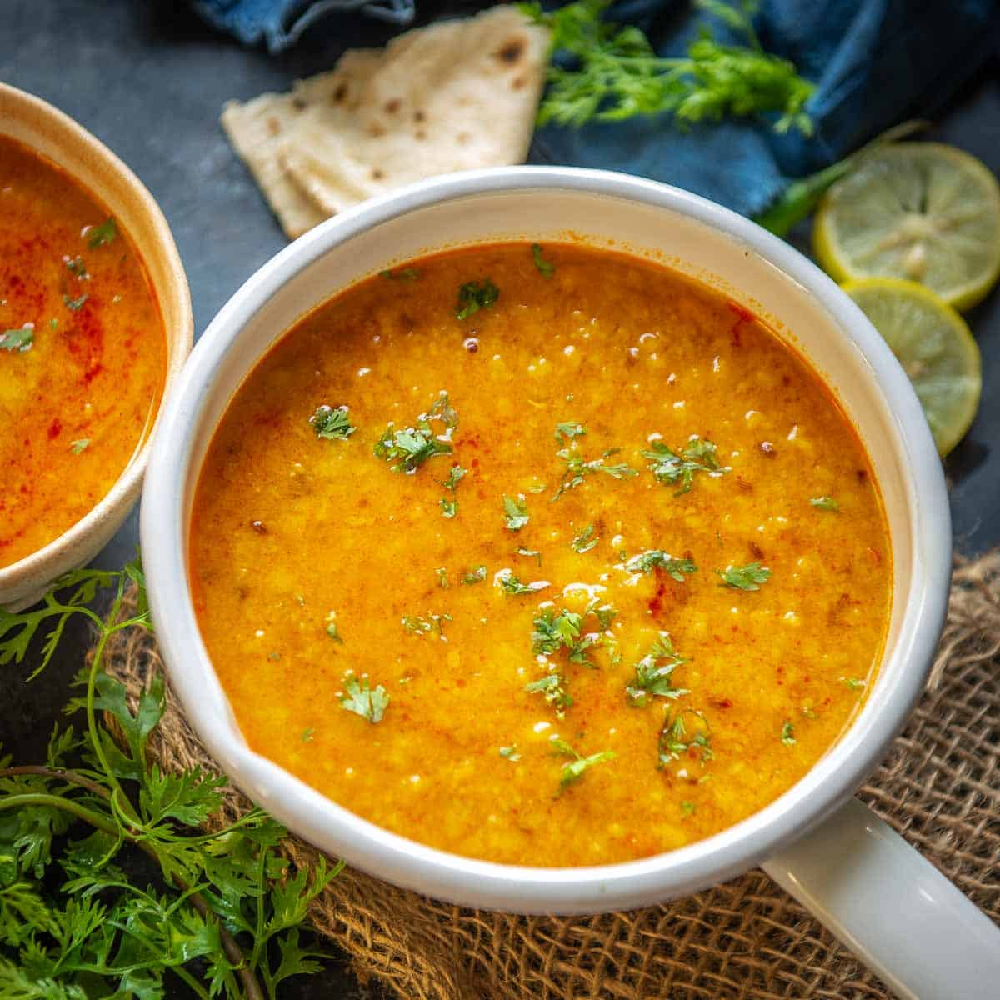

Dal

Description
Dal Tadka is one of the most popular lentil dish served in Indian restaurants. Basically, dal tadka is cooked lentils which are tempered with oil or ghee fried spices & herbs.
I have to admit that I simply love the dal tadka that is served at the restaurants even though we hardly eat out.
Ingredients
- Dal chana or arhar
- Tomato
- Onions
- Rinse your lentils in water for 3 to 4 times. I would recommend using ½ cup toor dal (arhar dal or pigeon pea lentils) or ¼ cup each of tuvar dal and masoor dal (pink or orange lentils).
- After rinsing, pour the lentils into a 2-liter pressure cooker and toss in a pinch of turmeric powder and 1.5 cups of water.
- Pressure cook the lentils for 9 to 10 minutes on medium heat, or until they are thoroughly cooked and completely soft. Once lentils are cooked, mash them with a spoon or wired whisk, then set aside.
- Heat 2 to 3 tablespoons of oil, ghee or unsalted butter in a pan or skillet. Once hot, add ½ or ¾ teaspoon of black mustard seeds.
- When you hear the mustard seeds start crackling, add 1 teaspoon of cumin seeds and fry them with the mustard seeds for several seconds or until they change color. You should hear the same crackle for the cumin seeds!
- With the mustard and cumin seeds still in the pan, add ⅓ cup of chopped onions.
- When the onions have lightly browned, add in 1 to 1.5 teaspoons ginger-garlic paste and stir to combine. Sauté the mixture for a few seconds or until the raw aroma of the ginger-garlic goes away on a low heat.
- Finally, add in 10 to 12 curry leaves, 2 to 3 dry red chilies, and 1 to 2 green chilies. Stir to combine with the ginger-garlic paste mixture.
- Add all the spice powders and mix again!
- ½ teaspoon turmeric powder (ground turmeric)
- ½ teaspoon red chili powder or cayenne or smoked paprika (For a light smoky flavor)
- 1 to 2 pinches of asafoetida, or hing (Skip if you do not have it.)
- After mixing thoroughly, add about ⅓ to ½ cup of finely chopped tomatoes.
Stir together one more time and continue to sauté until the tomatoes become soft and pulpy.
The oil should also start to leave the masala mixture, which is an indication that the onion-tomato base mixture is fully cooked.
- Add your mashed lentils to sautéed onion-tomato masala mixture in the pan or skillet.
- Combine and mix everything evenly with the rest of the masala mixture.
- Pour 1 to 1.5 cups of water. You can adjust the consistency of dal fry by adding more or less water as per your taste preferences.
- Season with salt as per taste. Stir and mix again.
- It is ready to serve and savour.